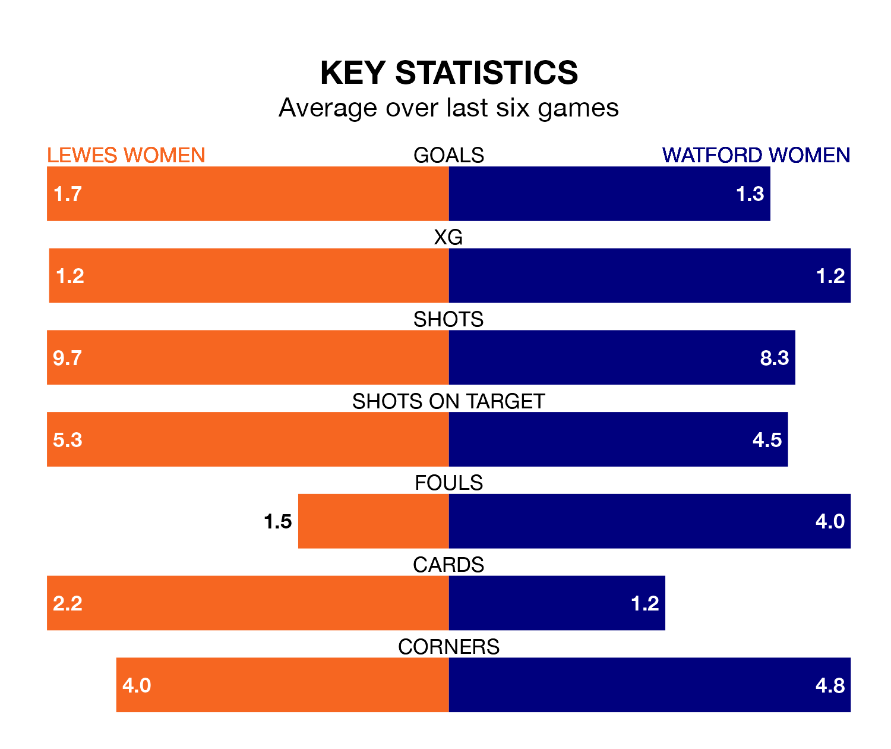

Sunday's early match at the Dripping Pan sees the league's two bottom sides face each other, as Lewes Women host rock-bottom Watford Women.
Lewes have picked up 13 points from their first 13 FA Women's Championship games, with three wins and four draws.
That is one point more than Watford have collected, having won three and drawn three.
In Carly Johns, Watford have one of the league's most on-form strikers so far this season. She has notched six goals in 16 appearances, to sit fourth in the scoring charts.
Her goal rate of one every 210 minutes is quicker than that of Hollie Olding, Lewes's top scorer with a goal every 373 minutes, and a total of four goals in 17 games.
With 17 goals in 17 games so far this season, the home team are the league's third-lowest scorers with 1.0 goals per game. And they are conceding more than average, letting in 29 goals at a rate of 1.7 per game.
The visitors are also below average scorers, with 1.1 goals per game, compared to a league average of 1.4. They have conceded 1.9 goals per game.
Lewes are in disappointing form in the FA Women's Championship, with one win and three draws from their last six games.
With two wins and a draw over that period, Watford's form is slightly better – they have taken seven points from 18, compared to Lewes's six.
In the last three years, Lewes and Watford have played each other on three occasions. Lewes won two of them and Watford one.
Their last meeting was on October 15, when Lewes won 2-1 away.
Lewes's last match was on Monday, a 2-1 loss against Blackburn Rovers Women, with Olding getting the goal for Lewes.
Watford lost 1-0 against Sheffield United Women last time out, on Wednesday.
Updated: 15:10 (UTC), 15/03/24